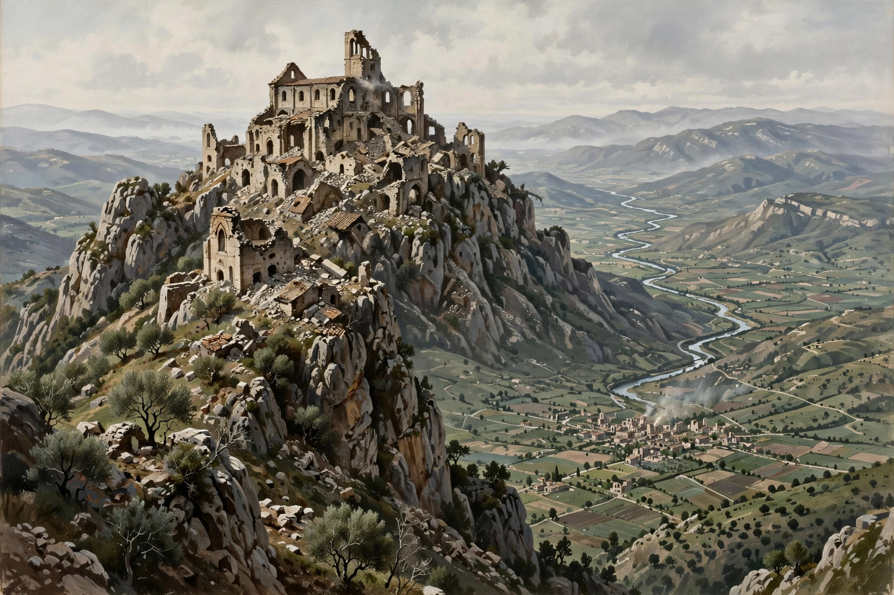

| Battle of Monte Cassino | ||
|---|---|---|
| Part of the Italian Campaign, Second World War | ||
| Date | 17 January – 18 May 1944 | |
| Location | Monte Cassino, Latium, Italy | |
| Result | Allied victory after four assaults Gustav Line broken; road to Rome opened | |
| Belligerents | ||
| Allies: United States, United Kingdom, Free France, Poland, Canada, New Zealand, India, others | Germany | |
| Commanders and leaders | ||
| Harold Alexander, Mark Clark, Oliver Leese, Władysław Anders, Alphonse Juin | Albert Kesselring, Heinrich von Vietinghoff, Fridolin von Senger und Etterlin | |
| Strength | c. 240,000 (all four battles, cumulative) | c. 140,000 (cumulative) |
| Casualties and losses | c. 55,000 (final battle c. 18,000) | c. 20,000 |

The Battle of Monte Cassino, also known as the Battle for Rome, was a series of four costly assaults by the Allies against the Winter Line in Italy held by Axis forces during the Italian Campaign of World War II. The intention was a breakthrough into the Liri Valley to reach Rome. Fought between 17 January and 18 May 1944, the battle ended in Allied victory when the Polish II Corps raised its flag over the ruins — but the ancient Benedictine abbey of Monte Cassino had been destroyed by Allied bombing, and the position had become a symbol of the grinding character of the Italian campaign.
Monte Cassino, a rocky hill crowned by the abbey founded by St Benedict in 529, dominated the entrance to the Liri Valley and Highway 6 to Rome — the hinge of the German Gustav Line. The Allies landed at Salerno and Anzio, but the Gustav Line held through the winter of 1943–44.
The first assault (January–February 1944) by the US 36th Division across the Rapido River was a bloody failure. In the second battle (Operation Avenger, February), fearing — wrongly, though the point remains debated — that the abbey was a German strongpoint, Allied commanders ordered its destruction: on 15 February 229 bombers reduced the abbey to rubble, killing hundreds of Italian refugees inside. German paratroopers then fortified the ruins, which proved even stronger than the intact building; attacks by the New Zealand Corps in February and March, including a massive bombardment of Cassino town on 15 March, failed.
For the final offensive, Alexander regrouped in secrecy, massing the British Eighth Army in the Liri Valley. Operation Diadem opened on 11 May 1944 with a huge artillery barrage. The French Expeditionary Corps under Juin broke through the "impassable" Aurunci Mountains, outflanking the line; the Polish II Corps, after a week of ferocious fighting, occupied the abbey ruins on 18 May, the Germans having withdrawn. Rome fell on 4 June 1944 — two days before D-Day eclipsed the news.
The battle's cost and the destruction of the abbey generated enduring controversy. The Polish war cemetery at Monte Cassino holds over a thousand graves; the abbey was rebuilt after the war and reconsecrated in 1964.
Hapgood & Richardson, Monte Cassino (1984); Molony et al., The Mediterranean and Middle East, vol. VI (official history).